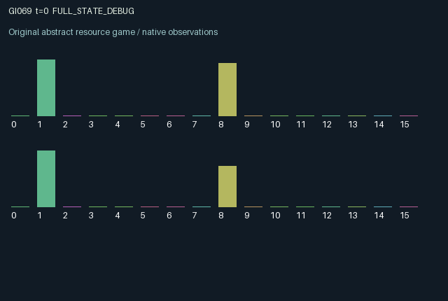

GI069 / LEGACY_ARRAY
astra-d2-00069: Reciprocal service with delayed acknowledgements and shared congestion
2 agents5 actions16 observation columns32 original horizonRuntime: PASS
Release verification episode
Untrained uniform legal actions. Actual JAX state sampled along the full original episode; full-state debug camera. No human performance or learning claim.

Run this game
crucibles play --game 69
Start Python locally, then open the address printed by the terminal. Installation, multiplayer, takeover and keyboard controls →
Objective, rewards & ending
Exact task contract
{
"termination": "Original kernel t >= 32; see mechanism and source"
}Declared per-step reward bounds: -1.0 to 1.0. Observability: source_defined.
Rules
Original mechanism document (historical status wording retained)
# astra-d2-00069: Reciprocal service with delayed acknowledgements and shared congestion This parentless proposal uses familiar finite-buffer networking, flow control, acknowledgements and timeout recovery. Its causal structure comprises separate outbound pipelines, receiver-held requests, delayed return credit and a shared congestion variable. No benchmark or other candidate source was consulted. Distinctness from other programs and operational qualification have not been established. Actions are 0 idle, 1 send an ordinary request, 2 send a protected request, 3 service the request in one's inbox, and 4 timeout/reset one's sending window. Each agent has two transmission credits. A send consumes one credit, inserts the privately observed demand value in outbound slot 0 and replaces that demand with a keyed random draw in [0.4, 1.0]. The packet advances to slot 1 on the next transition, then attempts to enter the other agent's inbox on the following transition. Thus the sender cannot directly finish its own request. An ordinary arrival is lost when shared load is at least 0.65. Protection avoids that condition but cannot avoid a full receiver inbox. Service removes the current inbox request and allows another arrival to replace it on the same transition. It generates a value-bearing acknowledgement for the original sender. On the next transition the sender receives its reward and a transmission credit, capped at two. The receiver receives a smaller service reward immediately. Ignoring another agent's inbox can therefore starve that agent's window and block its subsequent arrivals. Timeout clears one's outbound pipeline, cancels a currently arriving packet, restores two credits and starts a two-step sending cooldown. A request already held in the remote inbox survives timeout; a late acknowledgement is allowed and credits remain capped. Timeout does not empty one's local inbox. Failed arrivals, including canceled arrivals, increase shared load. Transmissions also raise load, service reduces it, and load otherwise decays. Protected transmission and timeout have larger immediate costs than ordinary sending. All actions are legal and unsuccessful prerequisites have no send/service effect. Each observer sees its own private future demand and outbound packet values, its incoming request value and acknowledgement, own credits and cooldown, shared load, public occupancy and cooldown indicators, and both previous actions. The other's prospective demand and outbound values are not direct columns. The 16 columns are clock; own credits; own slot 0 and slot 1 values; local inbox; received acknowledgement; own cooldown; shared load; own next demand; other outbound-busy indicator; other cooldown; own last failed-arrival indicator; aggregate pipeline occupancy; own/other previous action; other inbox-occupied indicator. Past public actions can support additional inference. Utility is 0.50 times the received acknowledgement plus 0.20 times the serviced value, minus 0.035 per successful transmission, another 0.045 for protection, 0.06 for timeout and 0.08 for a failed arrival. Reward is tanh(1.4 times utility), so it stays in [-1, 1]. No unacknowledged terminal work is paid out automatically. Both agents affect persistent queues, network load, credit availability and the other's future reward opportunities. The horizon is exactly 32 transitions and preserves terminal buffers. The source has not been executed or validated by the author. Syntax parsing does not imply compilation, eligibility, duplicate clearance or learning effectiveness.
Commands
0Action 0; see mechanism and source
1Action 1; see mechanism and source
2Action 2; see mechanism and source
3Action 3; see mechanism and source
4Action 4; see mechanism and source
Roles & abilities
agent_0 Original legacy agent; see mechanism and source
agent_1 Original legacy agent; see mechanism and source
Observation permissions
Training receives only the original observation rows. Role cameras use declared visibility; debug cameras are explicitly marked. Local benchmark records log debug exposure and role takeover history.
Exact observation layout
[]
Entity visibility & attributes
[]
Actual verification & provenance
Per-game execution receipt
{
"game": "gi069",
"status": "PASS",
"verification_revision": 2,
"source_sha256": "b6523eef37c809ec0a92beab71eeadcc5640d3fd4192ad81aad92a243c141d5c",
"seed": 20261101,
"runtime": {
"jax": "0.4.38",
"numpy": "1.26.4",
"devices": [
"TFRT_CPU_0"
]
},
"dimensions": {
"num_agents": 2,
"observation_size": 16,
"num_actions": 5,
"max_steps": 32
},
"checks": {
"eager_reset": {
"status": "PASS",
"seconds": 0.8835809230804443
},
"observation_spaces_legal_masks": {
"status": "PASS",
"seconds": 0.27778077125549316
},
"eager_step": {
"status": "PASS",
"seconds": 0.8189482688903809
},
"jit_reset": {
"status": "PASS",
"seconds": 0.20049786567687988
},
"jit_step": {
"status": "PASS",
"seconds": 0.2591571807861328
},
"eager_jit_integer_parity_float_measurement": {
"status": "PASS",
"seconds": 0.0005202293395996094
},
"jit_vmap_reset": {
"status": "PASS",
"seconds": 0.21958565711975098
},
"jit_vmap_step": {
"status": "PASS",
"seconds": 0.35858654975891113
},
"outer_autoreset_api": {
"status": "PASS",
"seconds": 0.6699583530426025
},
"full_original_horizon_episode_and_render": {
"status": "PASS",
"seconds": 2.503225088119507
}
},
"human_scores": null,
"browser_controls": "PENDING",
"failures": [],
"elapsed_seconds": 6.841694593429565,
"float_parity_max_abs": 0.0,
"numerical_parity": "EXACT",
"raw_terminal_absorbing": "NOT_PART_OF_ORIGINAL_LEGACY_CONTRACT",
"terminal_outer_reset": "PASS",
"episode_steps": 32,
"scripted_random_returns": [
0.12137501314282417,
0.34317656978964806
],
"terminal": true,
"demo_information": "FULL_STATE_DEBUG",
"demo_frames": 33,
"render_roles_checked": 2
}Chromium control verification
{
"game": "gi069",
"status": "PASS",
"human_scores": null,
"engineering": true,
"checks": [
"catalog_selected_and_real_native_reset",
"dom_queue_and_native_step",
"second_participant_ownership_and_native_joint_step",
"all_roles_individually_controllable_no_role_cap",
"explicit_debug_camera",
"release_to_pure_ai_without_reset"
],
"seconds": 3.539353609085083
}Original identity and file hashes
{
"id": 69,
"key": "gi069",
"title": "astra-d2-00069: Reciprocal service with delayed acknowledgements and shared congestion",
"summary": "",
"tags": [],
"family": "legacy_array",
"dimensions": {
"num_agents": 2,
"observation_size": 16,
"num_actions": 5,
"max_steps": 32
},
"source_sha256": "b6523eef37c809ec0a92beab71eeadcc5640d3fd4192ad81aad92a243c141d5c",
"manifest_sha256": "110ef84f8df93106358fb57f56053f452817274f6ac6ef632f51c25f8e414045",
"files": [
{
"file": "candidate.py",
"sha256": "b6523eef37c809ec0a92beab71eeadcc5640d3fd4192ad81aad92a243c141d5c",
"bytes": 4963,
"origin": "work/exp_2/astra_generation/discovery_v2/initial/candidate_00069/attempt_00/candidate.py"
},
{
"file": "mechanism.md",
"sha256": "9428f65fc39c0192f1dc57af25d092ea25894d16782c60ca30159016932804c7",
"bytes": 3589,
"origin": "work/exp_2/astra_generation/discovery_v2/initial/candidate_00069/attempt_00/mechanism.md"
}
],
"original_status": "LEGACY_SOURCE",
"original_saved_replay": false,
"release_validation": "PASS",
"human_scores": null,
"browser_validation": "PASS"
}